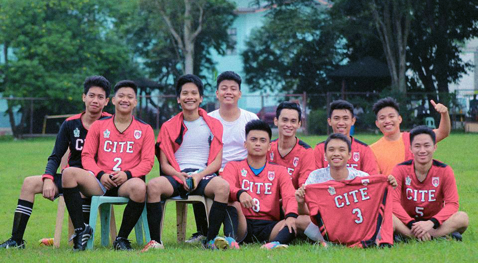

Never did the CITE Oxen let other colleges stain their clean slate as they went 4-peat after hammering a commanding 4-1 finish against the CBEAM Foxes during the championship match of this year’s football tournament held at the Oval, Oct 19. In total, CITE remained steadfast, sealing the event with a total of five wins and zero losses.
Meanwhile, the Yellow Foxes trailed on second place with their 2-3 record, while winless CEAS fell on the third place.
In the onset of the tournament, Dan Lester Albania of CEAS and Jan Jenyl Quibal of CBEAM had muscle cramps and was not able to play for the remainder of the game. CIHTM-CON Peacocks and Stags did not send any representative for the said event.

Oxen Claim 4-peat Title in Football Tourney
Written by on